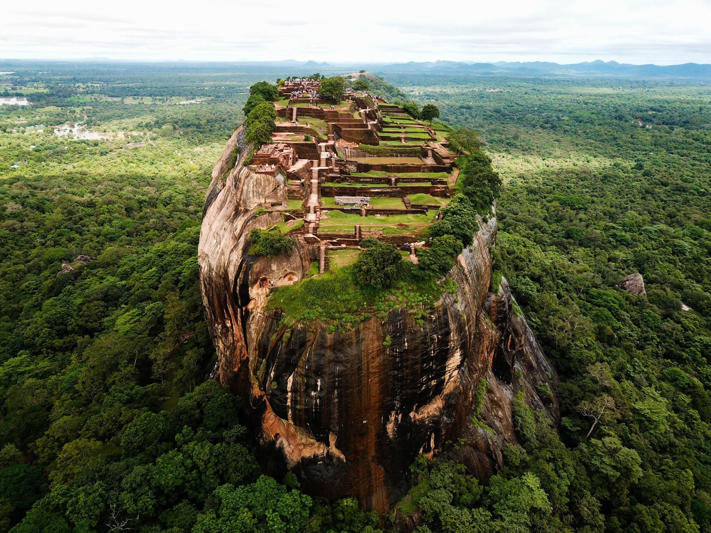
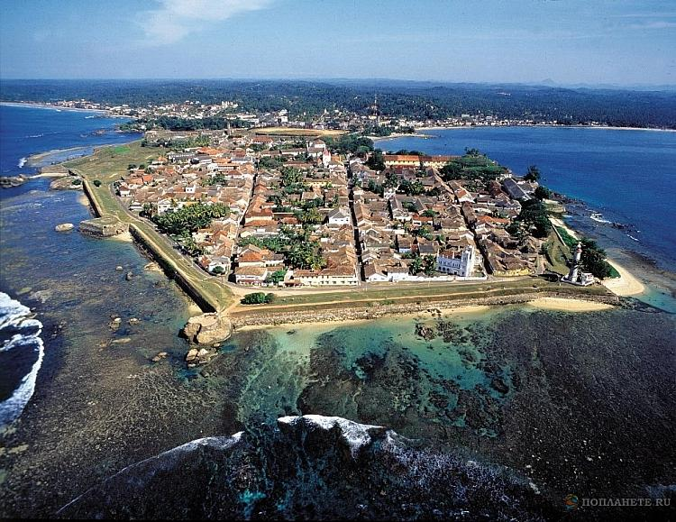

Sigiriya Rock Fortress

Sigiriya is one of Sri Lanka's most famous historical and archaeological attractions. The ancient rock fortress is surrounded by gardens, ponds and remains of a remarkable urban complex. Visitors can explore the rock, its gardens and the famous frescoes while learning about Sri Lanka's rich cultural heritage.
The site is widely recognised as an important cultural landmark and is a popular destination for both local and international visitors. Its dramatic setting and historical importance make it one of the most memorable places to visit in Sri Lanka.
Learn more: UNESCO World Heritage | Sri Lanka Tourism
Galle Fort

Galle Fort is a historic fortified city on the southern coast of Sri Lanka. Its streets, buildings and fortifications reflect centuries of cultural and architectural influences. The fort is also a popular place for walking, photography, shopping and discovering local heritage.
Visit the official tourism website for more information about destinations, travel experiences and attractions across Sri Lanka.
Country :
Sri Lanka
Capital :
Sri Jayawardenepura Kotte
Popular Destination :
Sigiriya
Heritage Site :
Galle Fort
Official Tourism :
UNESCO :